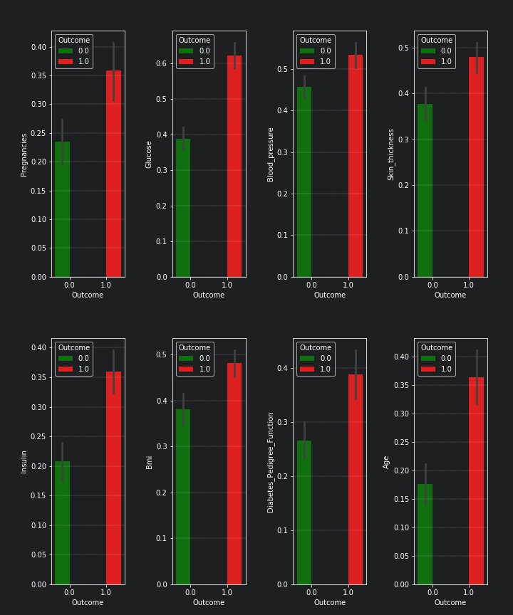
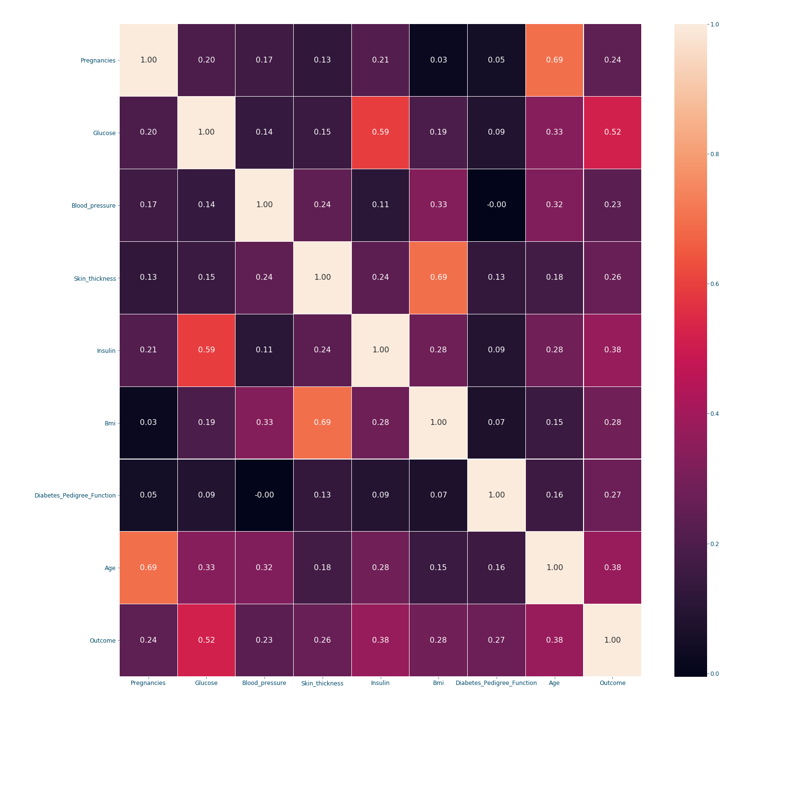
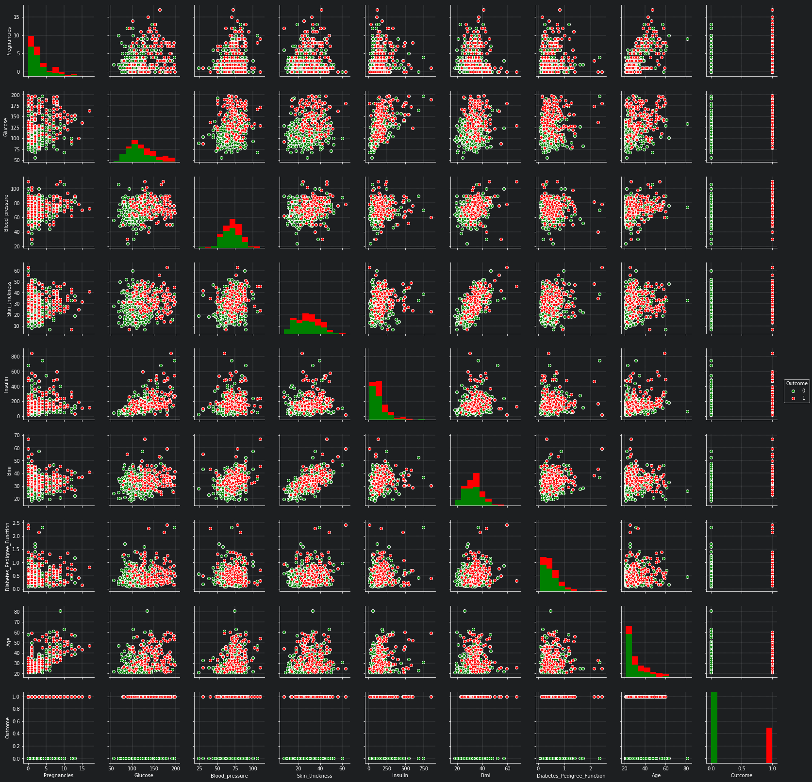

[30-06-2019] Diabetes detection using machine learning (part I)¶
Diabetes is one of the most serious health challenges today. The publicly available Pima Indian diabetic database (PIDD) have become a popular approach for testing the efficiency of machine learning algorithms 1. Within this context, this blog post is part of 2 posts providing an in depth introduction to diabetes detection using various machine learning approaches. In this first post in particular, we focus on exploring the data at hand and preparing it for machine learning related processing. |
The dataset can be Downloaded from here.
The code related to this blog can be found under
 Diabetes_detection_using_machine_learning.
Diabetes_detection_using_machine_learning.
| Watch | Star | Fork | Download | Follow @SuperKogito |
|---|
The Pima Indian diabetic database¶
The Pima Indian diabetes database (Download_link), donated from the National_Institute_of_Diabetes_and_Digestive_and_Kidney_Diseases, is a collection of medical diagnostic reports including information (9 numeric variables) on 768 female patients (with ages between 21 and 81) of Pima Indian heritage (a native American population living near Phoenix, Arizona, USA) 2. The database includes the following information 3 4 :
Pregnancies: Number of times pregnant
Glucose: 2-Hour plasma glucose concentration in an oral glucose tolerance test
BloodPressure: Diastolic blood pressure (\(mmHg\))
SkinThickness: Triceps skin fold thickness (\(mm\))
Insulin: 2-Hour serum insulin (\(\frac{\mu\text{U}}{ml}\))
BMI: Body mass index (BMI \(\frac{weight~[kg]}{height^2~[m^2]}\))
DiabetesPedigreeFunction: Diabetes pedigree function
Age: Female age (\(years\))
Outcome: Diabetes onset within 5 years (0 = No diabetes: green, 1 = diabetic: red).
The goal is to predict the diabetic diagnosis (#9) using the available 8 features (#1-#8).
Data exploration¶
First, we start by loading our data and using pandas.DataFrame.describe to get a nice description of the data at hand.
1 2 3 4 5 6 7 8 9 | import pandas as pd
# define column names
column_names = ["Pregnancies", "Glucose", "Blood_pressure",
"Skin_thickness", "Insulin", "Bmi",
"Diabetes_Pedigree_Function", "Age", "Outcome"]
# load data
data = pd.read_csv('diabetes.csv', names = column_names)
print(data.describe())
|
Pregnancies Glucose Blood_pressure Skin_thickness Insulin \
count 768.000000 768.000000 768.000000 768.000000 768.000000
mean 3.845052 120.894531 69.105469 20.536458 79.799479
std 3.369578 31.972618 19.355807 15.952218 115.244002
min 0.000000 0.000000 0.000000 0.000000 0.000000
25% 1.000000 99.000000 62.000000 0.000000 0.000000
50% 3.000000 117.000000 72.000000 23.000000 30.500000
75% 6.000000 140.250000 80.000000 32.000000 127.250000
max 17.000000 199.000000 122.000000 99.000000 846.000000
Bmi Diabetes_Pedigree_Function Age Outcome
count 768.000000 768.000000 768.000000 768.000000
mean 31.992578 0.471876 33.240885 0.348958
std 7.884160 0.331329 11.760232 0.476951
min 0.000000 0.078000 21.000000 0.000000
25% 27.300000 0.243750 24.000000 0.000000
50% 32.000000 0.372500 29.000000 0.000000
75% 36.600000 0.626250 41.000000 1.000000
max 67.100000 2.420000 81.000000 1.000000
Improving data quality¶
From the previous output help we can deduce that there are no missing values (all columns include 768 value). However, we notice some unrealistic values (it seems that someone replaced missing values with zeros ) in the data 1. For example: a Bmi = 0 means that the person either has an infinite height or a zero weight, which is not physically possible.
These errors are summarized in the following:
5 patients with a glucose of 0.
11 patients with a body mass index of 0.
35 patients with a diastolic blood pressure of 0.
227 patients with a skin fold thickness readings of 0.
374 patients with serum insulin levels of 0.
Although, these values can be reconstructed (using K-nearest neighbor algorithm assuming the data from patients with similar features follow the same pattern) but I opted for dropping rows including faulty data, which results in a database with only 392 case (no missing values). The previous pre-processing is done using the following code:
1 2 3 4 5 6 7 8 9 10 11 12 13 14 15 16 17 | import pandas as pd
def drop_column_values(data, column_name, value):
'''
Delete certain dataframe rows based on the value of a certain column element
'''
# Get names of indexes for which column Age has value 30
indices = data[ data[column_name] == value ].index
# Delete these row indexes from dataFrame
data.drop(indices , inplace = True)
# drop erroneous rows
for cname in ['Glucose', 'Blood_pressure', 'Skin_thickness', 'Insulin', 'Bmi']:
drop_column_values(data, cname, 0)
print(data.describe())
|
Pregnancies Glucose Blood_pressure Skin_thickness Insulin \
count 392.000000 392.000000 392.000000 392.000000 392.000000
mean 3.301020 122.627551 70.663265 29.145408 156.056122
std 3.211424 30.860781 12.496092 10.516424 118.841690
min 0.000000 56.000000 24.000000 7.000000 14.000000
25% 1.000000 99.000000 62.000000 21.000000 76.750000
50% 2.000000 119.000000 70.000000 29.000000 125.500000
75% 5.000000 143.000000 78.000000 37.000000 190.000000
max 17.000000 198.000000 110.000000 63.000000 846.000000
Bmi Diabetes_Pedigree_Function Age Outcome
count 392.000000 392.000000 392.000000 392.000000
mean 33.086224 0.523046 30.864796 0.331633
std 7.027659 0.345488 10.200777 0.471401
min 18.200000 0.085000 21.000000 0.000000
25% 28.400000 0.269750 23.000000 0.000000
50% 33.200000 0.449500 27.000000 0.000000
75% 37.100000 0.687000 36.000000 1.000000
max 67.100000 2.420000 81.000000 1.000000
Now that only correct data values are available, we notice the presence of various outliers. These outliers can result in faulty predictions later on. Therefore, we try to eliminate these outliers using the Z-statics. Moreover, for the algorithm each column represents a feature and high variance and scaling difference can have a negative on the predictions. Therefore, it is advised to scale the data, which will speed the system and improve its accuracy. There are different ways of doing this, here I choose to first convert the Insulin values as they are way bigger than the others. So instead of using (\(\frac{\mu\text{U}}{ml}\)), we convert to (\(\frac{\text{nU}}{ml}\)). On top, we scale all the data and map it to a (0, 1) interval. Finally, we notice that we have more samples describing the 0 outcome than samples for the 1 outcome. This might result in better detection for the 0 outcome. To keep things balanced, I decide to equalize the dataset and use an equal number of samples for both cases. In code this looks like the following:
1 2 3 4 5 6 7 8 9 10 11 12 13 14 15 16 17 18 19 20 21 22 23 24 25 26 27 28 | # plot raw data
fig = plt.figure(figsize = (20, 12))
plt.subplots_adjust(left = 0.12, right = 0.95, bottom = 0.05, top = 0.95,
wspace = 0.35, hspace = 0.25)
plt.subplot(2, 2, 1)
plt.title('Raw correct data')
data.boxplot(vert = False, labels = column_names, patch_artist = True)
# remove outliers and plot results
plt.subplot(2, 2, 2)
plt.title('Data without outliers')
data['Insulin'] = data['Insulin'] * .001
data = data[(np.abs(stats.zscore(data)) < 3).all(axis=1)]
data.boxplot(vert = False, labels = column_names, patch_artist = True)
# scale data and plot results
plt.subplot(2 , 2, 3)
plt.title('Scaled Data')
scaler = MinMaxScaler(feature_range=(0, 1))
data = pd.DataFrame(scaler.fit_transform(data.values), columns = column_names)
data.boxplot(vert = False, labels = column_names, patch_artist = True)
# equilize data and plot results
plt.subplot(2, 2, 4)
plt.title('Equilized Data')
data = equalize_data(data)
data.boxplot(vert = False, labels = column_names, patch_artist = True)
plt.show()
|
The effects of the aforementioned transformations can be seen in the following box-plots (Box_plot):

We can also visualize the balance in the data using bar and pie plots as shown in the next figure. These manipulations though improved the data but it also limited the dataset. The new dataset only includes 115x2 = 230 samples.
def plot_overview( data):
'''
Plot Equalized samples overview
'''
f, ax = plt.subplots(1, 2, figsize = (15, 7))
outcome = data.Outcome.value_counts()
f.suptitle("Samples count and percentage based on outcome", fontsize = 18.)
outcome.plot.bar(ax = ax[0], rot = 0, color = ('r', 'g')).set(xticklabels = ["Outcome = 0", "Outcome = 1"])
outcome.plot.pie(labels = ("Outcome = 0", "Outcome = 1"),
autopct = "%.2f%%", label = "", fontsize = 13.,
ax = ax[1], colors = ('r', 'g'), wedgeprops = {"linewidth": 1.5, "edgecolor": "#F7F7F7"})
ax[1].texts[1].set_color("w")
ax[1].texts[3].set_color("w")
plot_overview(data)

The previously discussed transformations are used to remove possible bias in the data and improve its quality. However, if used improperly, it may deteriorate the detection quality. the question of which transformations to apply is dependent on the data nature, and the features correlation and distribution.
Features overview¶
Now that we cleaned the data, let us examine the available features closely. For that, we look at the bars and densities charts generated using DfPlotter.py (Github link to come later). This should help build some intuitions and observations related to the features interactions.
{kind=link}

From these plots alone, we can already confirm some known facts such as:
With age the chances of having diabetes are higher.
With low responsiveness to insulin, the chances of diabetes are high.
Correlation and features selection¶
Correlation is a numerical coefficient representing the dependence between two features. It is a very useful metric, that helps rank the available features importance. In many systems, not all the features are relevant or at least some are redundant and leaving them out is a better option for speed or even accuracy reasons. Think of it as a similarity metric: if two features are highly correlated so they embody the same information and consequently you can drop one of them. Using the DfPlotter.py (Github link to come later) script, we compute & visualize the correlations matrix and the the pai-plots related to the data.
{kind=link}
When it comes to correlation coefficients: bigger coefficient mean more dependence between the features. The correlation’s matrix is a symmetric matrix with a diagonal of ones, since a feature/variable is totally correlated with itself. In our example, we can conclude from the last row that the outcome is mostly dependent on the following features in order: Glucose (0.52), Insulin (0.38), Age (0.38) and Bmi (0.28). However, if we are settling only for 3 features; choosing the first 3 might not be the best option since Glucose and Insulin are highly correlated (0.59). Therefore, a better choice would be to take: Glucose (0.52), Age (0.38) and Bmi (0.28). This will be further discussed in [insert knn post name].
{kind=link}
The pair plots confirm the previous results, since the only curves with some separation between data points are in the Glucose row, in particular the ones on the columns of the Skin_thickness and the Bmi.
Conclusion¶
This 1st plot from a series of 3 provided an elaborate explanation of data manipulation techniques, their use and reasons to use them. From the raw dataset we retrieve a balanced, scaled and correct number of samples, that we later explored the mechanics regulating its features. We will explore all these results to build a robust detection system in the next post.
References and Further readings¶
- 1(1,2)
Rahmat Zolfaghari, Diagnosis of Diabetes in Female Population of Pima Indian Heritage with Ensemble of BP Neural Network and SVM, IJCEM International Journal of Computational Engineering & Management, Vol. 15 Issue 4, July 2012. https://www.ijcem.org/papers072012/ijcem_072012_22.pdf
- 2
Pima Indians Diabetes Database, https://raw.githubusercontent.com/jbrownlee/Datasets/master/pima-indians-diabetes.names
- 3
Igor Shvartser, Jason Brownlee, Case Study: Predicting the Onset of Diabetes Within Five Years (part 1 of 3), March 2014 , https://machinelearningmastery.com/case-study-predicting-the-onset-of-diabetes-within-five-years-part-1-of-3/
- 4
Kaggle, Pima Indians Diabetes Database: Predict the onset of diabetes based on diagnostic measures, https://www.kaggle.com/uciml/pima-indians-diabetes-database
- 5
Kaggle kernals, Pima Indians Diabetes Database: Predict the onset of diabetes based on diagnostic measures, https://www.kaggle.com/uciml/pima-indians-diabetes-database/kernels